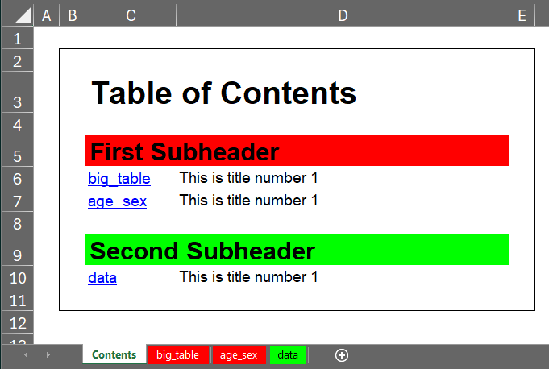

# Example data frame
my_data <- dummy_data(1000)
my_data[["person"]] <- 1
# Formats
age. <- discrete_format(
"Total" = 0:100,
"under 18" = 0:17,
"18 to under 25" = 18:24,
"25 to under 55" = 25:54,
"55 to under 65" = 55:64,
"65 and older" = 65:100)
sex. <- discrete_format(
"Total" = 1:2,
"Male" = 1,
"Female" = 2)
education. <- discrete_format(
"Total" = c("low", "middle", "high"),
"low education" = "low",
"middle education" = "middle",
"high education" = "high")
# Define style
set_style_options(column_widths = c(2, 15, 15, 15, 9))
# Define titles and footnotes. If you want to add hyperlinks you can do so by
# adding "link:" followed by the hyperlink to the main text.
set_titles("This is title number 1",
"This is title number 2",
"This is title number 3",
"Back to TOC cell: Contents!A1")
set_footnotes("This is footnote number 1 cell: W22",
"This is footnote number 2 file: C:/MyFolder/MyFile.docx",
"This is footnote number 3 link: https://cran.r-project.org/",
"This is footnote number 4")
# Catch the output and additionally use the options:
set_style_options(sheet_name = "big_table")
tab1 <- my_data |> any_table(rows = c("sex + age", "sex", "age"),
columns = c("year", "education + year"),
values = weight,
statistics = c("sum", "pct_group"),
pct_group = c("sex", "age", "education", "year"),
formats = list(sex = sex., age = age.,
education = education.),
na.rm = TRUE,
print = FALSE)
set_style_options(sheet_name = "age_sex")
tab2 <- my_data |> any_table(rows = "age",
columns = "sex",
values = weight,
statistics = "sum",
formats = list(sex = sex., age = age.),
na.rm = TRUE,
print = FALSE)
set_style_options(sheet_name = "data")
tab3 <- my_data |> export_with_style(print = FALSE)
# Add an automatically generated table of contents with custom styling
combine_into_workbook(tab1, tab2, tab3,
table_of_contents = TRUE,
subheaders = list("First Subheader" = "big_table",
"Second Subheader" = "data"),
subheader_colors = c("FF0000", "00FF00", "0000FF"),
colored_tabs = TRUE,
style = excel_output_style(toc_header_font_size = 20,
toc_subheader_font_size = 16))Version 1.3.4 got a lot bigger than I expected. After every new release I think, that I am done, but holy cow there are still many things to add and to fix. Let’s dive right into what is in this update. The full release notes can be found here.
Automatic table of contents for Excel workbooks
This was an idea by @JanMarvin and I think it is a great feature. It is easy to add and gives a fully styled overview over multi sheet workbooks. It comes as a standalone function to add a table of contents sheet afterwards or you can directly implement one while using combine_into_workbook. The styling can be controlled with the function itself and new parameters in excel_output_style.

Some things that changed
- combine_into_workbook lost the
fileparameter. Saving files now works with thestyleparameter like in the other tabulation functions. - retain_value has a new default behaviour without by variable: the function now carries forward values through upcoming NA values instead of just writing the first value into all other cells.
- recode_multi now converts factor variables by default into numeric and character values.
get_integer_length()was removed.
Loading and saving enhancements
Especially the load_file function got some upgrades.
- When passing a named vector or list into the
keepparameter, the original variables will directly be renamed. - Can now load fst files
by_reference, which means files are not loaded into memory and instead the necessary values are only loaded on demand. - New
keep_var_orderparameter enables to keep the original stored variable order, when using keep variables, instead of sorting them in provided order. wherenow works with old and renamed variable names. Additionally the parameter can now handle the new writing style with conditions as characters introduced by ifelse_multi.
The new keep and where features are also part of save_file.
Not directly loading related but it fits in here anyway: import_multi received a new paramter stack_data which can stack read in files and return them as a single data frame. Additionally it now can handle a vector of sheet names and import only the specified ones.
Even more tabulation features
I concentrate on any_table here, but some of the minor features also apply to the other tabulation functions.
- Can now render the tables as html file and show it in a browser window. This can be controlled via the new
outputoptionshtmlandexcel_html. The function now also returns an additional html element. This will also be used as fallback option, if Excel is not available. - Can now handle duplicate column names by making them unique (except NA columns).
- Formats can now be applied to pre summarised data.
- When using
byvariables the special keyword[by_var]is now replaced with the actualbyvalue in the titles and footnotes. - Added new
full_precisionparameter, which ignores the decimal places given through thestyleparameter and outputs all values with all their decimal places.
Run script, folder and project dialogs
Some small helper functions found their way into the package. They let you run single scripts, all scripts within a folder or an entire folder structure via RStudio dialog. This also comes with a new default compact layout of the build_master function.
Some news on 1.4.0
Version 1.4.0 will implement a new graphic framework built from scratch. In the last days stacked vertical bars have found their way into the framework and some other quality of life features. The now running alpha phase will be mainly about adding new diagram types and refining already existing features. And probably add some mor ealong the way.
The framework can already be tested, just visit the GitHub Page and switch to the “graphics” branch. Download the source code from there and you are good to go.